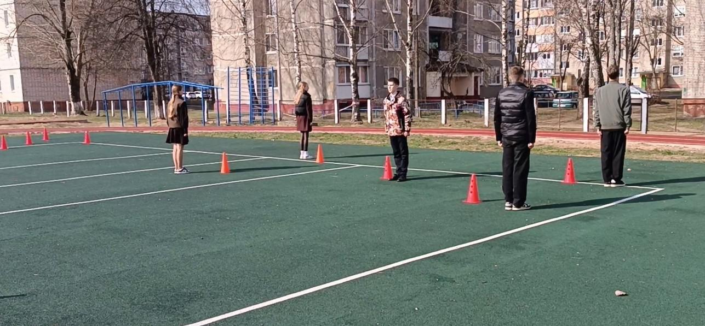
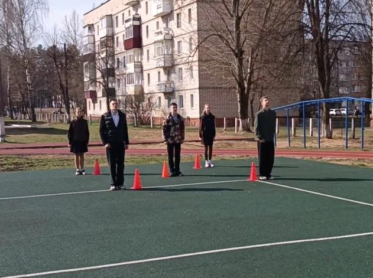
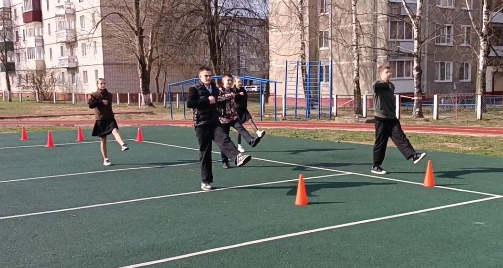
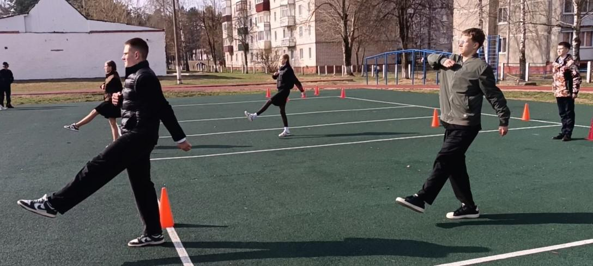

ТАК ВСЕ НАЧИНАЛОСЬ!
1 апреля ребята из военно-патриотического клуба «Юнармеец» приступили к подготовке к несению почетного караула в Вахте Памяти у мемориального комплекса «Жертвам фашизма». К слову сказать, это будет первая Вахта Памяти в Борисовском районе. Клубу предоставлена высокая честь открыть ее 7 мая.


Эта почетная обязанность возлагает на участников большую ответственность, предполагающую нелегкий и кропотливый этап подготовки. Синхронность, физическая выносливость, чувства такта – далеко не весь перечень качеств, которые ребята должны будут продемонстрировать перед жителями Борисова и Борисовского района. Вместе с тем, уже после первой тренировки можно сказать, что юнармейцам все по плечу!

